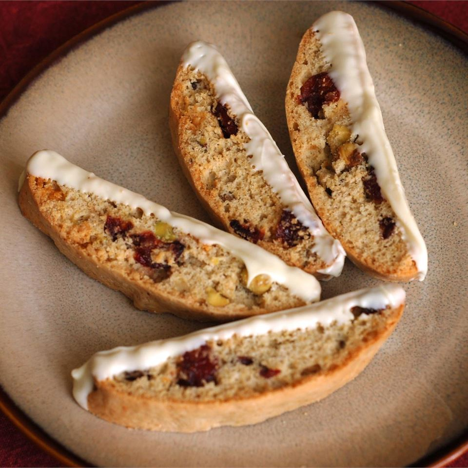

Biscotti

Description
The perfect snack to go with a cup of coffee.
Ingredients
- 1/4 cup butter
- 3/4 cup white sugar
- 1 tbsp orange zest
- 1/2 tsp vanilla extract
- 2 eggs
- 1 egg white
- 2 cups all purpose flour
1 1/2 tsp baking powder
- 1/4 tsp salt
- 2 ounces white choc, chopped
- 1/2 cup dried cranberries
- 1 1/4 cups pistachio nuts
Steps
- In a large bowl, cream together butter, sugar, orange zest, and vanilla with an electric mixer until light and fluffy. Mix in eggs and egg white one at a time, beating well after each addition. Sift together the flour, baking powder, and salt; gradually blend into the creamed mixture using a wooden spoon. Stir in the white chocolate, dried cranberries, and pistachios. Cover, and chill for 30 minutes, or until dough is no longer sticky.
- Preheat oven to 325 degrees F (165 degrees C). Line a baking sheet with parchment paper.
- Turn dough out on a lightly floured surface, and divide into halves. Form each half into a flattish log about 12 inches long by 3 inches wide. Arrange logs at least 3 inches apart on baking sheet.
- Bake for 30 minutes in preheated oven, or until pale gold. Allow logs to cool on the baking sheet until cool enough to handle. On a cutting board, cut logs crosswise on a diagonal into 1 inch thick slices. Arrange on baking sheet.
- Bake for an additional 15 minutes, or until golden. Transfer biscotti to wire racks, and cool completely. Store in an airtight container at room temperature.